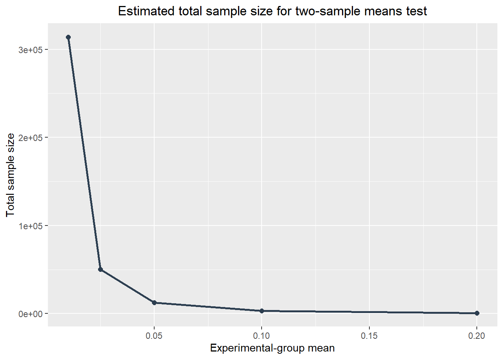
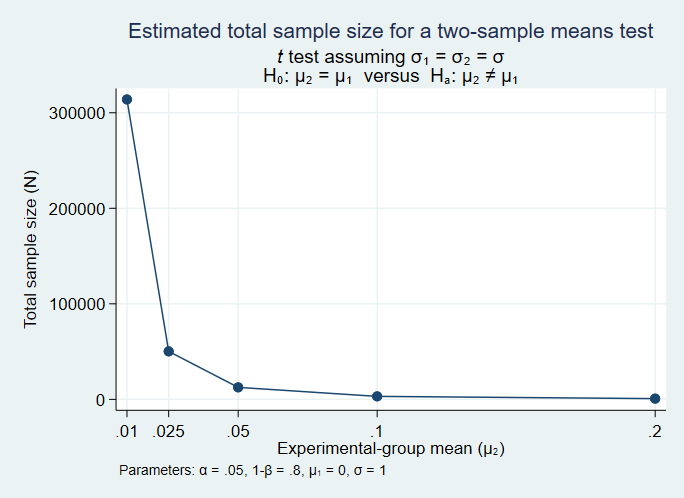

Individual level randomization
In this section, we calculate the power for individually randomized experiments. Suppose we want to calculate the sample size required for a randomized control trial(RCT) for a program intervention, where equal number of people are assigned to the treatment and control groups. We fix a test size (\(\alpha\)) of 0.5 to calculate the sample size required to detect a 0.1 standard deviation effect size with 80% power. We use a standard deviation value of 1.
To know more about the theoretical approach to power calculations, check my previous blog here
Execution in R
We use the pwr package in R to calculate the sample size for individually randomized experiments. We use the pwr.t.test() function with arguments n, d, sig.level, power, and type. The default standard deviation value is 1 so we do not need to specify it. A brief description of the arguments is given below:
| Arguments | Description |
|---|---|
| n | Number of observations (per sample) |
| d | Effect size |
| sig.level | Significance level (Type I error probability) |
| power | Type of t test |
To run the pwr.t.test() function we need to install the pwr package with the install.packages command. Watch this video to learn how to install packages in R.
The power.t.test() will give the sample size required to detect 0.1 standard deviation effect size, which is the difference between the treatment and control mean. We specify the value of n to NULL in order to get the number of observations per sample.
# Load the pwr package
library(pwr)
# Run the pwr.t.test function
pwr.t.test(n = NULL,
d = 0.1,
sig.level = 0.05,
power = 0.8,
type = "two.sample")
Two-sample t test power calculation
n = 1570.733
d = 0.1
sig.level = 0.05
power = 0.8
alternative = two.sided
NOTE: n is number in *each* groupExecution in Stata
In Stata, we use the command power twomeans {hypothesized control mean} {hypothesized treatment mean} where twomeans refers to the fact that we are comparing means between the control and treatment groups. To test a 0.1 standard deviation effect size, we set the mean value of control group to 1 and that of treatment group to 0.1. This will give us the result we want.
power twomeans 0 0.1
. power twomeans 0 0.1
Performing iteration Estimated sample sizes for a two-sample means test
t test assuming sd1 = sd2 = sd
Ho: m2 = m1 versus Ha: m2 != m1
Study parameters:
alpha = 0.0500
power = 0.8000
delta = 0.1000
m1 = 0.0000
m2 = 0.1000
sd = 1.0000
Estimated sample sizes:
N = 3,142
N per group = 1,571We would need a total sample size of 3,142 individuals who are randomly assigned to either treatment or control group, with 1,571 individuals in each, to detect a minimum detectable effect of 0.1 standard deviations.
Multiple effect size calculation
Execution in R
To calculate the sample size required for the treatment effects (0.01, 0.025, 0.05, 0.1, 0.2), we can use the for function to iterate the effect sizes and use the pwr.t.test function to calculate the corresponding sample size.
# Create variable effect_sizes and assign the treatment effects
effect_sizes <- c(0.01, 0.025, 0.05, 0.1, 0.2)
# Initialize an empty dataframe to store the results
result_table <- data.frame()
# Iterate over each effect size
for (i in effect_sizes) {
# Calculate sample size using the pwr.t.test function
# Make sure that the pwr package is loaded in R
result <- pwr.t.test(n = NULL,
d = i,
sig.level = 0.05,
power = 0.8,
type = "two.sample")
# n gives the sample size for each group
# Multiply by 2 to gett the total sample size
sample_size <- result$n*2
# Sample size for control group
N1 <- sample_size
# Sample size for treatment group
N2 <- sample_size
# Test size
alpha <- result$sig.level
# Power
power <- result$power
# Effect size
delta <- result$d
# Control group mean
m1 <- 0
# Treatment group mean
m2 <- result$d
# Standard deviation
Std_dev<- 1
# Append the results to the dataframe
result_table <- rbind(result_table,
c(alpha,
power,
sample_size,
N1,
N2,
delta,
m1,
m2,
Std_dev))
}
# Assign column names
colnames(result_table) <- c("Alpha",
"Power",
"Sample size",
"N1",
"N2",
"Delta",
"M1",
"M2",
"Std.Dev")
# Print the result table
print(result_table) Alpha Power Sample size N1 N2 Delta M1 M2 Std.Dev
1 0.05 0.8 313956.3412 313956.3412 313956.3412 0.010 0 0.010 1
2 0.05 0.8 50234.6281 50234.6281 50234.6281 0.025 0 0.025 1
3 0.05 0.8 12560.0979 12560.0979 12560.0979 0.050 0 0.050 1
4 0.05 0.8 3141.4661 3141.4661 3141.4661 0.100 0 0.100 1
5 0.05 0.8 786.8114 786.8114 786.8114 0.200 0 0.200 1Execution in Stata
We again use the power twomeans command in Stata to calculate the respective sample size for the given effect size. The option table(, labels(N “Sample size” sd “Std. Dev”)) indicates that we want the output in table format, and that we want “N” to be renamed as “Sample size and sd to be renamed as”Std. Dev”.
power twomeans 0 (0.01 0.025 0.05 0.1 0.2), table(, labels(N "Sample size" sd "Std. Dev."))
. power twomeans 0 (0.01 0.025 0.05 0.1 0.2), table(, labels(N "Sample size" sd
> "Std. Dev."))
Performing iteration Estimated sample sizes for a two-sample means test
t test assuming sd1 = sd2 = sd
Ho: m2 = m1 versus Ha: m2 != m1
+---------------------------------------------------------------------+
| alpha power Sample size N1 N2 delta m1 m2 |
|---------------------------------------------------------------------|
| .05 .8 3.1e+05 1.6e+05 1.6e+05 .01 0 .01 |
| .05 .8 50236 25118 25118 .025 0 .025 |
| .05 .8 12562 6,281 6,281 .05 0 .05 |
| .05 .8 3,142 1,571 1,571 .1 0 .1 |
| .05 .8 788 394 394 .2 0 .2 |
+---------------------------------------------------------------------+
+-----------+
| Std. Dev. |
|-----------|
| 1 |
| 1 |
| 1 |
| 1 |
| 1 |
+-----------+We can see that the required sample size increases exponentially as the effect size approaches 0. Instead of a table calculations might be easier to interpret in a graph.
Plotting the relationship
Execution in R
# Load the grammar of graphics package to plot the graph
library(ggplot2)
# Load dplyr package to use pipe operator |> to enter commands in a chain
library(dplyr)
result_table |> # select variables Delta and Sample size from the data frame
select(Delta, `Sample size`) |>
ggplot(aes( x = Delta, y = `Sample size`)) + # plot Delta on the x-axis
# and Sample size on the y-axis
geom_line(color = "#2c3e50", lwd = 1) + # add a geometric line to the plot
geom_point(color = "#2c3e50", size = 2) + # add a geometric point to the plot
labs (title = "Estimated total sample size for two-sample means test",
x = "Experimental-group mean",
y = "Total sample size") + # add labels
theme(plot.title = element_text(hjust = 0.5)) 
Execution in Stata
power twomeans 0 (0.01 0.025 0.05 0.1 0.2), graph
. power twomeans 0 (0.01 0.025 0.05 0.1 0.2), graph
Now, it is easier to visualize the relationship between sample size and effect size. The sample size increases exponentially as we appraoch an effect size of zero.